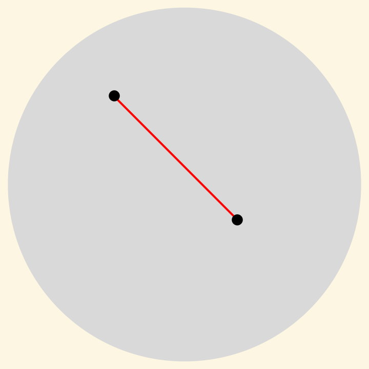
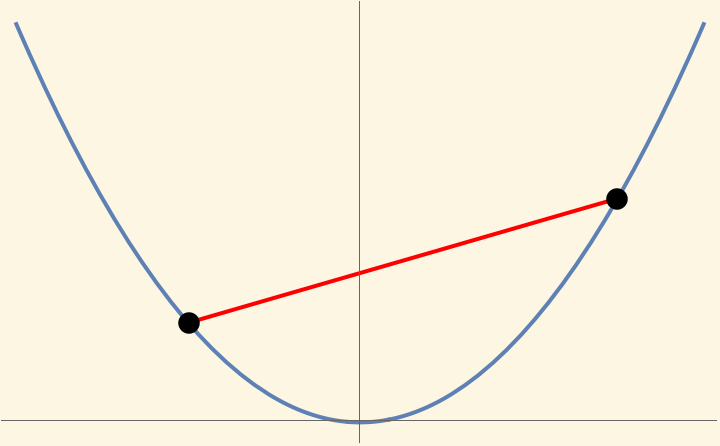
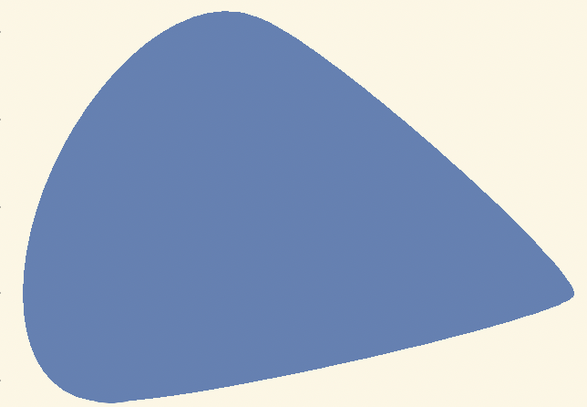

The Surprising Ubiquity of
Convex Optimization
Kevin Shu

Optimization is Everywhere
Robotics

Rosen et al. 2021.
Materials

Serles et al. 2025.
Machine Learning

Issues with Optimization


Desiderata for Optimizers
- Computationally efficient
- Reliable
- Globally optimal
What is Convex Optimization?
Convex Set - For any $x, y \in C$, and $t \in [0,1]$, \[tx + (1-t)y \in C.\] |
 |
Convex Function - For any $x, y \in \R^d$, and $t \in [0,1]$, \[ f(tx + (1-t)y) \le tf(x) + (1-t)f(y). \] |
 |
| Convex Program - Minimize a convex function on a convex set. |
What is Convex Optimization?
Linear Programs

| $\min$ | $c^{\intercal} x$ |
| s.t. | $Ax = b$ |
| $x \in \R^n_{\ge 0}$ |
Conical Programs

| $\min$ | $c^{\intercal} x$ |
| s.t. | $Ax = b$ |
| $x \in K$ |
e.g. $K$ is PSD cone.
Regression

| $\min$ | $\|Ax - b\|_p$ |
| s.t. | $x \in \R^n$ |
Why Convex Optimization?
- Computationally efficient
- Reliable
- Expressive
- Globally optimal
But not all optimization problems are convex!
Convex Reformulations
We want to solve some problem in engineering or science.

Convex Reformulations
We want to solve some problem in engineering or science.
→

Motivating Example: Attitude Estimation
Probes in deep space need to estimate their orientation.1

Two data sources: positions of distant stars and accelerometer estimate .
1. Wahba, Grace. "A least squares estimate of satellite attitude." (1965).
Attitude Estimation
Goal: Find a rotation satisfying two conditions:
- Transforms an internal star map to observed locations of the stars.
- Is not too far from some the estimate from the accelerometer.
The set of rotations is called the special orthogonal group $\SO(3)$. \[ \SO(n) = \{X \in \R^{n \times n} : X^{\intercal}X = I, \det(X) = 1\}. \]
Attitude Estimation
Model:
| $\min_X$ | $\|AX - B\|_F^2$ | Star map error |
| s.t. | $\|X - X_0\|_F^2 \le \epsilon$ | Accelerometer estimate |
| $X \in \SO(n)$ | Rotation constraint |
$A, B \in \R^{d \times n}$ represent the observed/stored star locations.
$X_0 \in \R^{n \times n}$ is estimated rotation matrix.
$\|\cdot\|_F = \sqrt{\tr(X^{\intercal}X)}$ is the Frobenius norm.
Hidden Convexity
Theorem (RSW 2024)
If $A, B \in \R^{d\times n}$ and $X_0 \in \R^{n \times n}$ for $n > 2$, then \[ \big\{(\|AX - B\|^2, \|X - X_0\|^2) : X \in \SO(n)\big\} \subseteq \R^2\] is convex.
If we let $C$ be the convex set in the above theorem, then the attitude estimation problem can be represented as \[\min \{y_0 : y_1 \le \epsilon, (y_0, y_1) \in C\}.\]
Manifestations of hidden convexity in my work

Manifestations of hidden convexity in my work

Outline of the Talk
- Introduction
- Main: A Topological Framework for Hidden Convexity
- Lagrangian Dual Sections
- Path-Tracking Algorithms
- Briefly: Other Work
- Long Step Gradient Descent
- Active Sampling Polynomial Regression
- Conclusions and Future Work
A Topological Framework for Hidden Convexity 1
1. Lagrangian Dual Sections: A Topological View of Hidden Convexity - V Chandrasekaran, T Duff, J Rodriguez, K Shu
Constrained Optimization
Many fundamental optimization problems can be expressed as constrained problems over nonconvex sets (e.g. manifolds, algebraic varieties).
Examples:
Quadratically Constrained Quadratic Programming (QCQP)
Combinatorics, Power Systems
Stiefel Manifold Optimization
Robotics, Computer Vision
Inverse Eigenvalue Problems
Spectral Graph Theory, Network Science, Sturm-Liouville Equations

Boy's embedding of $\R\mathbb{P}^2$.
Constrained Optimization
Many fundamental problems expressed as constrained optimization problems over a domain $M$ (e.g. a manifold, an algebraic variety, $\R^d$).
Formulation
\[ \max \{f_0(x) : f_1(x) = c_1, \dots, f_k(x) =c_k, x \in M\}, \]
for a topological space $M$, a function $f : M \rightarrow \R^{k+1}$, and $c \in \R^k$.
Such problems are typically NP-hard. Convex optimization gives bounds on the optimal value.
Constrained Optimization
Formulation
\[ \max \{f_0(x) : f_1(x) = c_1, \dots, f_k(x) =c_k, x \in M\}, \]
for a topological space $M$, a function $f : M \rightarrow \R^{k+1}$, and $c \in \R^k$.
Reformulation in terms of the image
Think of $y = f(x)$ in \[ \max \{y_0 : y_1 = c_1, \dots, y_k =c_k, y \in f(M)\}. \]
Constrained Optimization
Formulation
\[ \max \{f_0(x) : f_1(x) = c_1, \dots, f_k(x) =c_k, x \in M\}, \]
for a topological space $M$, a function $f : M \rightarrow \R^{k+1}$, and $c \in \R^k$.
Convex Relaxation
\[ \max \{y_0 : y_1 = c_1, \dots, y_k =c_k, y \in \color{red}{\text{conv}(}f(M)\color{red}{)}\}. \]
When are these two optimization problems equivalent?
Tightness of Convex Relaxations
If $M$ is a topological space (e.g. a manifold, an algebraic variety, $\R^d$), and $f : M \rightarrow \R^{k+1}$ is continuous, when is the convex relaxation tight?
Tightness of Convex Relaxations
If $M$ is a topological space (e.g. a manifold, an algebraic variety, $\R^d$), and $f : M \rightarrow \R^{k+1}$ is continuous, when is the convex relaxation tight?
To answer this question, we will need to analyze the Lagrangian.
$$ \mathcal{L}(\lambda, x) = \langle \lambda, f(x)\rangle.$$
Associate for each $\lambda \in \R^{k+1}$ the optimization problem of finding $$ \underset{x\in M}{\argmax}\; \mathcal{L}(\lambda, x).$$
Tightness of Convex Relaxations
If $M$ is a topological space (e.g. a manifold, an algebraic variety, $\R^d$), and $f : M \rightarrow \R^{k+1}$ is continuous, when is the convex relaxation tight?
$$ \mathcal{L}(\lambda, x) = \langle \lambda, f(x)\rangle.$$
Definition
A Lagrangian dual section for $f$ consists of a continuous function $D : \R_{\ge 0} \times \R^k \rightarrow M$ so that for all $\lambda$, \[ D(\lambda) \in \underset{x \in M}{\argmax}\; \L(\lambda,x). \]
When does a Lagrangian dual section exist?
Tightness of Convex Relaxations
If $M$ is a topological space (e.g. a manifold, an algebraic variety, $\R^d$), and $f : M \rightarrow \R^{k+1}$ is continuous, when is the convex relaxation tight?
Theorem (CDRS 2025)
Suppose that there is a Lagrangian dual section for $f$. Then for any $c \in \R^k$, \[ \max \{f_0(x) : f_1(x) = c_1, \dots, f_k(x) = c_k, x\in M\} = \] \[ \max \{y_0 : y_1 = c_1, \dots, y_k = c_k, y \in \color{red}{\conv}(f(M))\}. \]
We will also discuss algorithmic implications later in the talk.
Tightness of Convex Relaxations
Recovers a wide range of results with a unified proof
- O. Toeplitz, "Das algebraische Analogon zu einem Satze von Fejér," Mathematische Zeitschrift (1918)
- F. Hausdorff, "Der wertvorrat einer bilinearform," Mathematische Zeitschrift (1919)
- T.-Y. Tam, “Kostant’s convexity theorem and the compact classical groups,” Linear and Multilinear Algebra (1997)
- C.-K. Li and T.- Y. Tam, “Numerical ranges arising from simple lie algebras,” Canadian Journal of Mathematics (2000)
- E. Gutkin, E. A. Jonckheere, and M. Karow, “Convexity of the joint numerical range: Topological and differential geometric viewpoints,” Linear Algebra and its Application (2004)
- Mengmeng Song and Yong Xia. Linear programming on the Stiefel manifold. SIAM Journal on Optimization (2024)
An Example for Grassmannians
Real Grassmannian - orthogonal projections
\[\Gr^{n,m} = \{X \in \R^{n\times n}_{sym} : X^2 = X, \tr(X) = m\}\]
Theorem (CDRS 2025)
If $A_0, \dots, A_k$ span a linear subspace of $\R^{n\times n}_{sym}$ containing no nonzero matrix with a repeated $m^{th}$ largest eigenvalue, then \[ \max \{\langle A_0, X\rangle : \langle A_1, X\rangle = c_1, \dots, \langle A_k, X\rangle = c_k, X \in \Gr^{n,m} \}=\]
\[ \max \{\langle A_0, X\rangle : \langle A_1, X\rangle = c_1, \dots, \langle A_k, X\rangle = c_k, X \in \color{red}{\conv}(\Gr^{n,m})\}.\]
An Example for Grassmannians ($m=1$)
\[ \Gr^{n,1} = \{xx^{\intercal} : \|x\|=1, x \in \R^n\}, \text{ so}\]
Linear optimization over $\Gr^{n,1}$ corresponds to quadratically constrained quadratic optimization over $\R^n$.
Corollary (Homogenized S-Lemma)
If $A_0, A_1 \in \R^{n\times n}_{sym}$, then \[ \max \{x^{\intercal} A_0 x : x^{\intercal} A_1 x = c_1, \|x\|=1, x \in \R^n \}=\]
\[ \max \{\langle A_0, X\rangle : \langle A_1, X\rangle = c_1, \tr(X) = 1, X\succeq 0\}.\]
We also have analogues of this theorem that work with more constraints.
An Example for Grassmannians ($m=1$)
An Example for Stiefel Manifold
Stiefel manifold - orthogonal projections
\[\St^{n,m} = \{X \in \R^{n\times m} : X^{\intercal}X = I\}\]
Theorem (CDRS 2025)
If $A_0, \dots, A_k$ span a linear subspace of $\R^{n\times m}$ containing no nonzero singular matrix (i.e. matrix of rank $< m$), then \[ \max \{\langle A_0, X\rangle : \langle A_1, X\rangle = c_1, \dots, \langle A_k, X\rangle = c_k, X \in \St^{n,m} \}=\]
\[ \max \{\langle A_0, X\rangle : \langle A_1, X\rangle = c_1, \dots, \langle A_k, X\rangle = c_k, \color{red}{\sigma_{max}(X) \le 1}\}.\]
Similar results in the context of inverse eigenvalue problems and more.
Some Mathematical Connections
Lie groups/Representation Theory
Orbits of Lie group actions
-
Kostant convexity theorem
-
Representations of Clifford algebras
Algebraic Topology
-
Homotopy Groups
-
Vector bundles on spheres
Mathematical Physics
-
Von Neumann-Wigner noncrossing theorem
From Continuity to Path-tracking Algorithms
From Continuity to Path-tracking Algorithms
Question: Assuming that there is a Lagrangian dual section $D$, how we find $D(\lambda)$ for a given $\lambda$?
Motivation: Knowing $D(\lambda)$ for all $\lambda$ facilitates the ellipsoid algorithm.
Method: Use path-tracking approach to find $D(\lambda)$.

From Continuity to Path-tracking Algorithms
Assume there is a Lagrangian dual section $D$, and that we know $D(\lambda_0)$ for fixed $\lambda_0 \in \R^{k+1}$.
Idea: Compute $D((1-t)\lambda + t\lambda_0)$ for $t \in [0,1]$ by slowly changing $t$.

From Continuity to Path-tracking Algorithms
Instantiating this idea on a computer requires notions from Riemannian geometry. We will assume
- $M$ is a Riemannian manifold.
- $f$ is smooth.
- There is a Lagrangian dual section $D$, which is Lipschitz.
Theorem (CDRS 2025) - Informal
Assume (1), (2), and (3) above. Given the value of $D(\lambda_0)$ for some $\lambda_0 \in \R^{k+1}$, there is a path-tracking algorithm which outputs $D(\lambda)$ up to accuracy $\epsilon$ in $O\left(\frac{1}{\epsilon}\right)$ evaluations of $f$ and its derivatives.
The big-$O$ suppresses dependence on condition numbers related to $\mathcal{L}$.
Unbalanced Procrustes Problems
Given an $n$-dimensional point cloud $A$, and an $m$ dimensional point cloud $B$ with $n \gt m$, find a rotation/projection that best maps $A$ to $B$.
$$ \min_{X^{\intercal}X = I, X \in \R^{n \times m}} \|AX - B\|^2.$$
A 3D model with different rotations/projections

A fixed noisy projection
Unbalanced Procrustes Problems
Artificially view this as a Lagrangian problem by introducing $f:\St^{n,m} \rightarrow \R^2$ with \[f(X) = (-\|AX - B\|^2, \langle A^{\intercal}B, X\rangle).\]
The Lagrangian optimization problems then look like \[ \underset{X\in \St^{n,m}}{\argmax}\; -\lambda_1 \|AX - B\|^2 + \lambda_2 \langle A^{\intercal}B, X\rangle. \] when $\lambda_1 = 0$, this is easy to solve. When $\lambda_2 = 0$, this is the UPP.
Unbalanced Procrustes Problems
Theorem (CDRS 2025)
If $A \in \R^{d \times 3}$ and $B \in \R^{d \times 2}$ satisfy certain explicit inequalities, then the function \[ f(X) = (-\|AX - B\|^2, \langle A^{\intercal}B, X\rangle) \] has a Lagrangian dual section.
Roughly 95% of uniformly randomly chosen $A$ and $B$ satisfy these inequalities.
Unbalanced Procrustes Problems

Summary
- Topological properties of the Lagrangian imply convexity
- Globally optimal path-tracking algorithms
Outline of the Talk
- Introduction
- Main: A Topological Framework for Hidden Convexity
- Lagrangian Dual Sections
- Path-Tracking Algorithms
- Briefly: Other Work
- Long Step Gradient Descent
- Active Sampling Polynomial Regression
- Conclusions and Future Work
Other Work
Accelerating Gradient Descent
Accelerating Gradient Descent
Goal: Minimize $f : \R^d \rightarrow \R$ which is convex, and has $L$-Lipschitz gradients.
Gradient descent sets \[x_i = x_{i-1} - h_i\nabla f(x_{i-1})\] for a choice of step sizes $h_0, \dots, h_N$.
Standard step size choice is $h_i = \frac{1}{L}$, converging at a rate of $O(1/n)$.
Much work treats constant step size case, all converging at $O(1/n)$ rate.
- Y. Drori and M. Teboulle. (2014)
- T. Rotaru, F. Glineur, and P. Patrinos. (2024).
- J. Kim. (2024)
Our step sizes
Can gradient descent be asymptotically faster on convex functions just by tuning the step sizes?
Yes! With nonmonotonic, unbounded size, and typically asymmetric step sizes.
First (contemporaneous) work: (Altschuler and Parrilo 2024) and (GSW 2024).
Our step sizes
Our latest result:
Theorem (GSW 2024)1
There is a recursive construction for finding an optimized* sequence of $n$ step sizes achieving a worst case rate of convergence of $O(1/n^{1.27})$ on convex functions with $L$-Lipschitz gradients.

*conjectured to be minimax optimal amongst gradient descent methods.
Analysis uses convex optimization.
1Simultaneous with Jiang and Zhang.
Active Sampling
Active Sampling for Polynomial Regression
Given an unknown function $f$, find a degree-$d$ polynomial which closely approximates it, where we have access to $f$ via point evaluations.
\[ p^* = \argmin_{p \in \R[x]_d} \int_{-\infty}^{\infty}(f(x) - p(x))^2d\mu(x). \]
Idea: Choose a random set of points $x_1, \dots, x_n \in \R$, and find a polynomial $\hat{p}$ so that $\hat{p}(x_i) \approx f(x_i)$ for each $i$.
Active Sampling for Polynomial Regression
Given an unknown function $f$, find a degree-$d$ polynomial which closely approximates it, where we have access to $f$ via point evaluations.
\[ p^* = \argmin_{p \in \R[x]_d} \int_{-\infty}^{\infty}(f(x) - p(x))^2d\mu(x). \]
Theorem (CMS 2025)
If $\lambda_1, \dots, \lambda_{d+1}$ are the eigenvalues of random matrix associated to $\mu$, and $\hat{p}$ is a degree $d$ polynomial so that $\hat{p}(\lambda_i) = f(\lambda_i)$ for each $i$, then \[ \E[\hat{p}] = p^*. \]
If $\mu$ is Gaussian, then the random matrix is GUE, and the eigenvalues can be sampled in $O(d\log(d))$ time.
Conclusions and Future Work
Topology and Optimization
Deepen connections between topology and optimization.
Does approximate continuity for Lagrangian maximizers imply approximate convexity?
- Can we get quantitative bounds on the integrality gap of the convex relaxations for combinatorial problems?
Projection Simplicity
Lifting approaches are central to convex optimization. Extension complexity quantifies this.
Projection simplicity - can we understand when low dimensional projections are simpler to optimize over?
- In polytope case, interesting examples coming from zonotopes. Possible connections to matroid polytopes?
→
References
Topology
- Hidden convexity, optimization, and algorithms on rotation matrices - A Ramachandran, K Shu, AL Wang (MOR, 2024)
- Lagrangian Dual Sections: A Topological View of Hidden Convexity - V Chandrasekaran, T Duff, J Rodriguez, K Shu (In Submission, 2025)
First-order methods
- Accelerated objective gap and gradient norm convergence for gradient descent via long steps - B Grimmer, K Shu, AL Wang (INFORMS JOO, 2024)
- Composing optimized stepsize schedules for gradient descent - B Grimmer, K Shu, AL Wang (MOR, 2025)
- Beyond Minimax Optimality: A Subgame Perfect Gradient Method - B Grimmer, K Shu, AL Wang (In Revision - Math Prog, 2025)
Hyperbolic Polynomials
- Hyperbolic Relaxation of k-Locally Positive Semidefinite Matrices - G Blekherman, S Dey, K Shu, S Sun (SIOPT, 2022)
- Linear Principal Minor Polynomials: Hyperbolic Determinantal Inequalities and Spectral Containment - G Blekherman, M Kummer, R Sanyal, K Shu, S Sun (IMRN, 2022)
- Symmetric Hyperbolic Polynomials - G Blekherman, J Lindberg, K Shu (J Pure and Appl. Algebra, 2025)
Probability
- Debiasing Polynomial and Fourier Regression - C Camano, R Meyer, K Shu, S Sun (SOSA, 2025)
- A Semidefinite Hierarchy for the Expected Independence Number of a Random Graph - D Cifuentes, K Shu, A Toriello (Opt Letters, 2025)
Conclusions
Surprising appearances of convex optimization
- Manifold Optimization
- Algorithm Design
Mathematical connections
- Topology
- Game Theory
Bonus Slides
Proof of Lagrangian Dual Sections Theorem
Restrict $D$ to the upper hemisphere to get a map of topological spaces $B^{k} \rightarrow M$. View $f$ as a map from $M$ to the convex hull of $f(M)$, denoted by $C$.
$D$ has image in $\partial C$, which is homeomorphic to a sphere $S^k$. Combining these maps, we get a map $B^k$ to $S^k$.
Theorem (CDRS 2025)
Suppose that for all $\lambda \in \R^{k+1}$, $\L(\lambda,X)$ has a unique maximizer over $x \in M$, and that $M$ is a metric space. Then the map $D(\lambda) = \argmax_{x \in M}\L(\lambda, x).$ is continuous.
Lagrangian dual sections for $\SO(n)$ Let $A_0, \dots, A_k \in \R^{n\times n}$. Lagrangian of \[ f(X) = (\langle A_0, X\rangle, \dots, \langle A_k, X\rangle)\text{ is} \] \[ \L(\lambda, X) = \langle \sum_{i=0}^k \lambda_i A_i, X\rangle. \]
We can change basis so that $\lambda_i A_i$ is diagonal without changing structure of optimal solutions.
If SVD of $\lambda_i A_i$ is $U\Sigma V^{\intercal}$, where $\Sigma$ has distinct singular values then the unique maximizer of $\L(\lambda, X)$ is given by $UDV^{\intercal}$, where $D$ is the identity or $D - 2v_{min}v_{\min}^{\intercal}$ depending on the sign of $\det(\lambda_i A_i)$. (Ky Fan, Kostant)
Von-Neumann-Wigner: If $A_0, A_1 \in \R^{n\times n}$ are generic, then there is no nonzero matrix of the form $\lambda_0 A_0 + \lambda_1 A_1$ which has repeated singular values.
This, plus a limiting argument, implies that all 2D projections of $\SO(n)$ are convex.
Our step sizes - Intuition
Two extreme functions:

$f(x) = \frac{L}{2}x^2$

$f(x) = \begin{cases} L\left(|x|-\frac{1}{2}\right) \text{ if }|x| > 1\\ \frac{L}{2}x^2 \text{ otherwise}\end{cases}$
Optimal step sizes balance performance on these two functions in a recursive fashion.
Performance Estimation Problems
Interpolation conditions: \[ Q_{ij} = f(x_i) - f(x_j) - \langle \nabla f(x_j), x_i - x_j \rangle - \frac{1}{2L}\|\nabla f(x_i) - \nabla f(x_j)\|^2 \ge 0. \]
Suboptimality optimization problem: let $f_i = f(x_i)$ and $\nabla f(x_i) = g_i$ and $x_i = x_0 - \sum_{j=0}^{i-1}h_{ij}\nabla f(x_i)$, then the suboptimality optimization problem is \[ \max \{\frac{f_N - f_{\star}}{\|x_0 - x_{\star}\|^2} : \forall i, j: f_i - f_j - \langle g_i, x_i - x_j\rangle - \frac{1}{2L}\|g_i - g_j\|^2\}. \]
This is a quadratic program, and its SDP relaxation is tight (as long as $d > N$).
Performance Estimation Problems
SPGM Subproblem
| $\min_{\xi \in \R, z \in \R^d}$ | $\frac{L}{2\xi}\|x_0 - z\|^2$ |
| s.t. | $f_i - \frac{1}{2L}\|g_i\|^2 - \langle g_i, x_i - \frac{1}{L}g_i \rangle$ |
| $+ L \langle g_i, z\rangle \le f_{n-1} - \frac{1}{2L}\|g_{n-1}\|^2 - \xi$ | |
| $\xi \gt 0$ |
SPGM update: \[ x_{i+1} = \theta_i\left(x_i - \frac{1}{L}g_i\right) + (1-\theta_i)z_i, \] where $z_i$ is the optimizer from above.
In the above, \[ \theta_i = \frac{\tau_i}{\tau_i + \delta(\tau_i)}, \] where $\delta(t) = 1+\sqrt{1+2t}$, and $\tau$ is the optimal value of the SPGM subproblem.